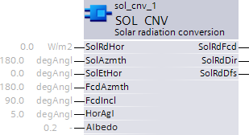
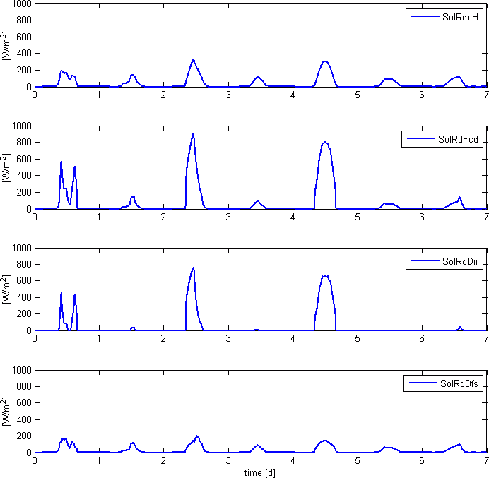

SOL_CNV: Solar radiation conversion
The block SOL_CNV (FB556) calculates a global radiation value measures on a horizontal plant into a global radiation value on any plane (e.g. vertical or tilted facades). The calculation depends on the solar position (solar elevation angle and solar azimuth angle) as calculated by block SOL_POS as well as the average horizontal angle as well as reflective properties of the ground. SOL_CNV_SiUn (FB556), SOL_CNV_UsUn (FB796)
Application
- Converting the global radiation measurement to the horizontal plane into global radiation values on any oriented surfaces reduces the number of individual sensors.
- Estimate of present diffuse light ratio (e.g. for anti-glare functions).
Functionality
Calculates global radiation value to any oriented surface:
The input [SolRdHor] is a measured value of solar radiation on a horizontal plane. A pyranometer is used for a more precise measurement. For the solar protection applications normally implemented using the block, one sensor based on a solar cell should suffice, e.g. Siemens solar impact Sensor QLS60 (mounted horizontally!) or similar sensor. A self-heating sensor/housing is advantageous, since this avoids incorrect measured values in winter (snow on the device) as well.
The solar position (solar elevation and azimuth) as calculated by block SOL_POS is required to convert radiation value measured on the horizontal plane. The inputs are typically interconnect with this block!
Definition of facade angle (facade orientation: azimuth and incline) corresponds to the angle at block SOL_FCD.
The horizontal angle [HorAgl] determines how the facade is shaded from surrounding buildings, terrain and trees.
- A building on flat ground and not shaded by surrounding buildings or trees, [HorAgl] = 0°.
- The typical building value is > 0°. For solar protection applications implemented using the block, it is generally sufficient to use a constant horizontal angle for a specific facade.
Comment:
The horizontal angle dependent on the azimuth (e.g. for horizontal limitation function) can be considered here (SOL_CNV) as well if available. Of course, this requires modifying the input interface for the function block.
Surface reflective properties:
Albedo is a measurement for surface reflective properties of diffusely reflecting, i.e. non-self lighting surfaces. It is determined by the quotients of reflected incoming light and is between 0 and 1.
Setting recommendations for various surfaces:
- Fresh snow 0.80 - 0.90.
- Old snow 0.45 - 0.90.
- Clouds 0.60 - 0.90.
- Desert 0.30.
- Savannah 0.20 - 0.25.
- Fields (uncultivated) 0.26.
- Grass 0.18 - 0.23.
- Forrest 0.05 - 0.18.

Inputs
Pin | E | Description | |
SolRdHor | pa | Measure solar radiation on the horizontal plane (global radiation). | |
SolAzmth | pa | Solar azimuth angle, calculated in SOL_POS | |
0° | North. | ||
90° | East. | ||
180° | South. | ||
270° | West. | ||
SolEtHor | pa | Solar elev. angle for horizon, calculated in SOL_POS. | |
0° | Sun on the horizontal plane. | ||
90° | Sun at its zenith. | ||
FcdAzmth | pa | Facade orientation: Azimuth of the facade. Note for engineering: Corresponds as well to the definition at SOL_FCD. | |
0° | North-facing facade. | ||
90° | East-facing facade. | ||
180° | South-facing facade. | ||
270° | West-facing facade. | ||
FcdIncl | pa | Facade orientation: Facade incline. Note for engineering: Corresponds as well to the definition at SOL_FCD. | |
0° | Horizontal facade facing up (zenith). | ||
90° | Vertical facade (standard). | ||
HorAgl | pa | Average horizontal angle. The average horizontal angle [HorAgl] indicates how the facade is shaded from surrounding buildings, terrain and trees.
| |
Albedo | pa | Surface reflective properties. Albedo is a measurement for surface reflective properties of diffusely reflecting, i.e. non-self lighting surfaces. It is determined by the quotients of reflected incoming light and is between 0 and 1. Recommended settings for various surfaces:
| |
Outputs
Pin | E | Description |
SolRdFcd | a | Solar radiation focused on the facade |
SolRdDir | a | Direct solar radiation on the facade |
SolRdDfs | a | Diffuse radiation on the facade |
Input values
Pin | Description | Data type. | Default value | E.g. Engineering unit or Text group | Min. | Max. |
SolRdHor | Solar radiation horizontal surfaces | Real | 0.0 | W/m2 | 0.0 | 1500.0 |
0.0 | W/ft2 | 0.0 | 139.4 | |||
SolAzmth | Solar azimuth angle | Real | 180.0 | degAngl | -360.0 | 360.0 |
SolEtHor | Solar elev.angle f.horizon | Real | 0.0 | degAngl | -90.0 | 90.0 |
FcdAzmth | Azimuth of the facade | Real | 180.0 | degAngl | -360.0 | 360.0 |
FcdIncl | Facade incline | Real | 90.0 | degAngl | -180.0 | 180.0 |
HorAgl | Average horizontal angle | Real | 5.0 | degAngl | 0.0 | 90.0 |
Albedo | Reflective properties | Real | 0.2 | - | 0.0 | 1.0 |
Output values
Pin | Description | Data type. | Default value | E.g. Engineering unit or Text group | Min. | Max. |
SolRdFcd | Solar radiation on the facade | Real | 0.0 | W/m2 | 0.0 | 1500.0 |
0.0 | W/ft2 | 0.0 | 139.4 | |||
SolRdDir | Direct solar radiation facade | Real | 0.0 | W/m2 | 0.0 | 1500.0 |
0.0 | W/ft2 | 0.0 | 139.4 | |||
SolRdDfs | Diffuse solar radiation facade | Real | 0.0 | W/m2 | 0.0 | 1500.0 |
0.0 | W/ft2 | 0.0 | 139.4 |
Example
Example: Vertical, southern-facing facade.
Constant input variable:
FcdAzmth = 180°, FcdIncl = 90° (South-facing), HorAgl = 3°, Albedo = 90°.
Input variables varying by time:
Measured data SolRdnH for Zurich from January 1, 2006 through January 7, 2006: SolEtHor and SolAzmth as calculated for Zurich (geographical longitude 8.57° and latitude 47.38°) for January 1, 2006 (local time).
Diagrams:
[SolRdFcd] = Solar radiation on the facade.
[SolRdDir] = Direct solar radiation facade.
[SolRdDfs] = Diffuse solar radiation facade.
[SolRdHor] = Solar radiation on a horizontal plane as input value.

Time line for SolRdHor (input variable), SolRdFcd, SolRdDir, SolRdDfs (output variables) for the example above.
The variable SolRdFcdref is entered on the second axis as a supplement.
Process response
Standard (see General rules and information).
Troubleshooting
Standard (see General rules and information).